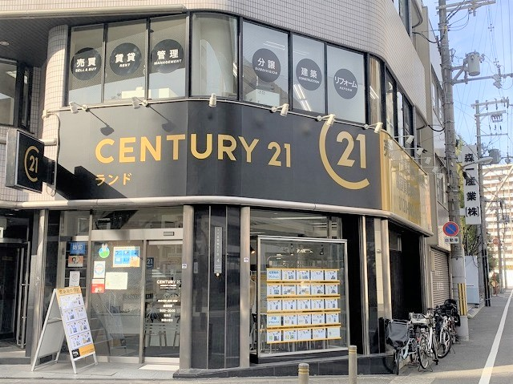

まずは悩みの整理から
このようなお悩みはありませんか？

選ばれる理由
「売る」よりも、
納得して任せられる売却を。
前職では8年間、介護の現場でご本人様やご家族の不安と向き合ってきました。そこで学んだ「話を丁寧に聞くこと」「気持ちに寄り添うこと」「先の生活まで考えること」は、不動産売却でも大切にしている姿勢です。
- 大阪市エリアの相場感をもとに現実的にご提案
- 売却・賃貸・保有の選択肢を比較
- 専門用語を抑え、分かりやすく説明
- 無理な売却や強引な営業は行いません
30秒でまず相場を確認
AI査定を入口に、
北村が売却方針まで整理します。
AI査定は「まず価格を知る」ための入口です。実際に売るべきか、どの価格で出すべきか、今売るべきかどうかは、近隣事例や販売戦略を含めて一緒に判断します。
AI査定をご利用の方へ
担当を北村希望の場合は、お名前の後ろに （キタムラ） とご入力ください。
例：山田 太郎（キタムラ）30秒
AI相場診断
まずは目安価格を確認。その後、売却戦略・時期・注意点を北村が分かりやすくご案内します。
北村 充
CENTURY21 株式会社ランド 阿波座店
Profile
はじめまして、北村充です。
売却は、ご家族構成の変化、相続、住み替え、将来への備えなど、人生の節目で検討されることが多いものです。だからこそ、私は「高く売る」だけでなく、売主様が納得して判断できることを大切にしています。
- 出身
- 大阪府泉大津市
- 資格
- 介護福祉士・損害保険募集人
- 趣味
- 読書・料理・釣り・キャンプ・バイク
- 大切にしている言葉
- 努力
対応エリア
大阪市内を中心に対応しています。
Flow
無料相場診断の流れ
LINEまたは電話で相談
物件所在地・種別・相談内容をお送りください。
物件情報を確認
近隣売出・成約事例を確認します。
相場感をご案内
机上査定または訪問査定をご提案します。
売却方針を整理
価格・時期・リスクを一緒に整理します。
FAQ
よくあるご質問
まだ売るか決めていなくても相談できますか？
はい。相場だけ知りたい段階でも大丈夫です。
査定に費用はかかりますか？
無料です。AI査定・机上査定・ご相談に費用はかかりません。
しつこく営業されませんか？
無理な営業は行いません。ご希望のペースに合わせてご案内します。
マンション以外も対応できますか？
戸建・土地・空き家・相続不動産もご相談可能です。